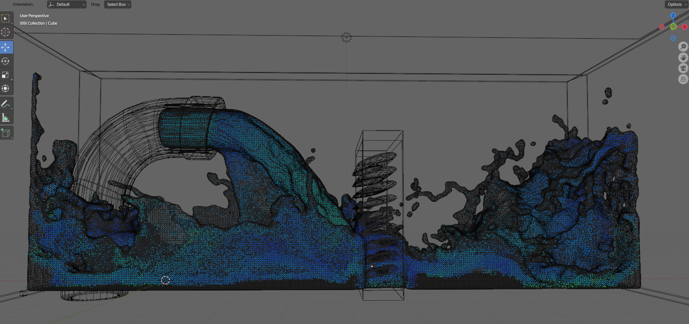
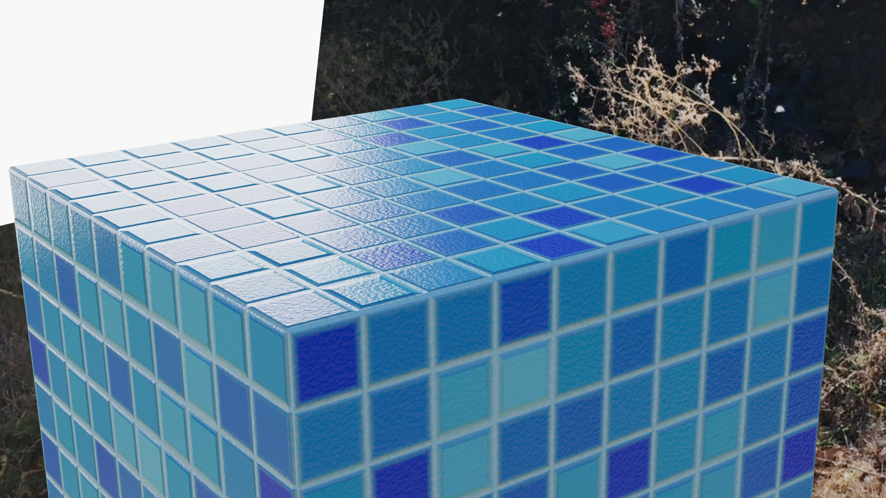

A very simple water simulation test. this is attempt 2 of an unbaked fluid simulation at 100 ray trace samples with denoising. this render took 1.8 hours without baking. first attempt took 2.5 hours, strange since there was only a slight difference. All materials are procedural, right down to the rust. This simulation was made in blender 3.1, sadly one update before they added water caustics.
Animation - Jordan Cruz
2022
A mid render Screenshot just before denoising
A wireframe view of the simulation, showing the how the volume object fills the space
The procedural pool tile material that ties the whole deal together nicely.